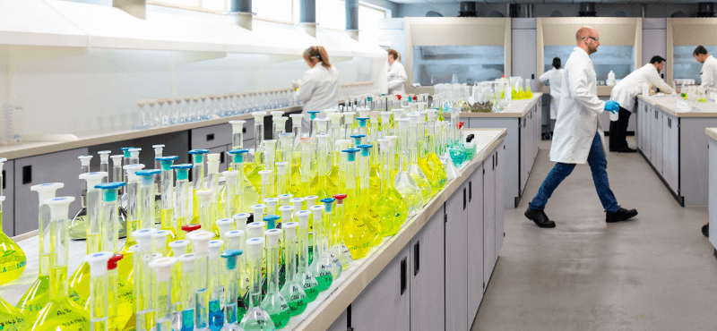

Alfred H Knight opera una red global de laboratorios acreditados, especializados en el análisis comercial de metales, minerales, combustibles sólidos y productos agrícolas. También nos especializamos en análisis de producción, ensayos físicos y preparación de muestras. Nuestro alto nivel de experiencia técnica, años de trayectoria en análisis clásico y nuestra inversión en las técnicas instrumentales más sofisticadas permiten a nuestros laboratorios brindar un servicio rápido y eficiente. Nuestros químicos, altamente cualificados y con amplia experiencia, cuentan con el respaldo de nuestro Departamento de Control de Calidad y nuestro Departamento de Investigación y Desarrollo. Gracias a nuestra continua inversión en equipos, tecnología y personal, garantizamos a nuestros clientes resultados rápidos y precisos mediante la mejora constante de la eficiencia, las técnicas de medición y la calidad.
| Análisis: | ||
| ✔ Ensayo comercial | ✔ Escaneo semicuantitativo | ✔ Análisis completo |
| ✔ Pérdida por ignición (LOI) | ✔ Registro en la LME | ✔ Análisis de subcontratación |
| ✔ Radioactividad | ✔ Determinación de la humedad del flujo | ✔ Análisis de instrumentación de alto volumen (HVI) |
| ✔ Terrible | ✔ Cribado | ✔ Desmagnetización |
| ✔ Perforación | ||
| Pruebas fisicas: | ||
| ✔ Determinación del petróleo | ✔ Determinación de la humedad | ✔ Peso específico |
| ✔ Análisis de pantalla | ||
| Preparacion de muestra: | ||
| ✔ Preparación de muestras compuestas | ✔ Preparación de muestras de calidad | ✔ Densidad aparente |
| ✔ Apresto | ✔ El secado | |
| Otros servicios: | ||
| ✔ Análisis ambiental | ✔ Análisis del agua | ✔ Análisis de lubricantes y aceites |
| ✔ Ensayos no destructivos | ✔ Análisis rápido de la composición de NPK |